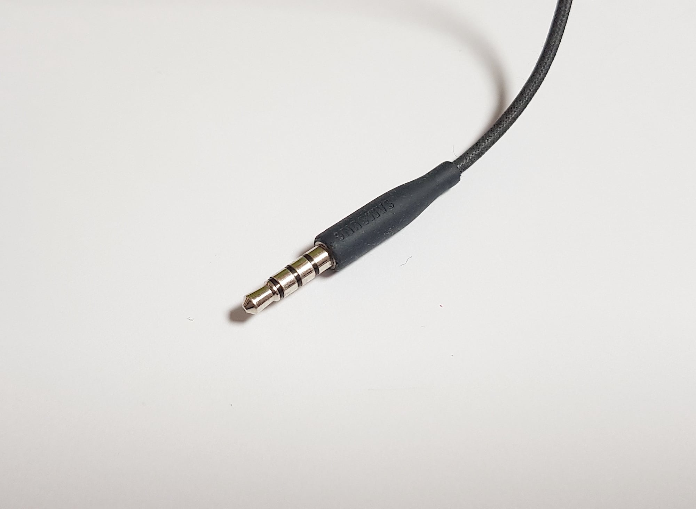

3.5파이좀 돌려줘....

3.5파이좀 돌려줘....
그냥 무선이어폰 써라. 얼마한다고
틀
요즘 폰은 얇아서 넣기 쉽지 않을 듯
귀찮더라도 젠더나 무선 DAC 써야지
이거 떄문에 폰 바꾸면서 블투 이어폰으로 갈아탔는데 생각보다 성능 좋고 편해
블투 있는데 굳이?
DAC 써
요즘생각하는데 구멍없는게더나은거같음
난 별로
이거 써본사람 틀딱임
난 이거말고 외부메모리슬롯 ㅠ
젠더나 알리서 꼬다리댁 저렴한거 사면 되잖아
꼬다리 써라
꼬다리 쓰셈
얘 하나때문에 방진방수 난이도 조지느니..
내 폰엔 아직 있는데 가끔 옛날 이어폰 써야될때 유용함
틀
dac ㄱ
80년 썼으면 좀 보내드려라
(출시가 1950년대임)
C타입에비해 음질차이가큰가?
C타입 이어폰으로 쓰면 안됨? 진심 궁금해서 그럼
동시에 충전을 못하잖아
c타입 허벌 되는 거 좆같아서 특수 경우 외엔 항시 무선충전 사용
그것만 교체하려고 해도 요샌 어디에 붙어 잇다거나 해서 돈만 존나 많이듦
왜 그냥 Cd플레이어 만들어달라하지ㅋㅋ
sd카드 슬롯 좀 제발...
방수가 더 중요해진 시점이 왔는데
외워 cx31993
3.5파이
마이크로sd카드
교체형배터리
GOAT
이걸 도대체 왜쓰려고하는거야???? 진짜 개불편한데
LG V60 쓰고 있는데 SD카드 슬롯이랑 3.5파이 있어서 편하긴 함.
카페에서 충전하면서 소리나 영상보기도 편하고.
어짜피 폰에 있다면 굳이 안 쓸 필요가 없지ㅇㅇ
ㅈㅂ 나도 부활했으면 좋겠음.
블투이어폰은 충전해야 되잖아ㅜ 폰, 태블릿, 놋북 세상 오만게 다 충전이라 충전거리를 더 추가시키고 싶지 않아서 줄이어폰만 쓰는데 3.5 개간절함..
노트9까지 있던가 내 폰엔 아직있네
그걸 찾는 당신을 위해 엑스페리아가 있습니다